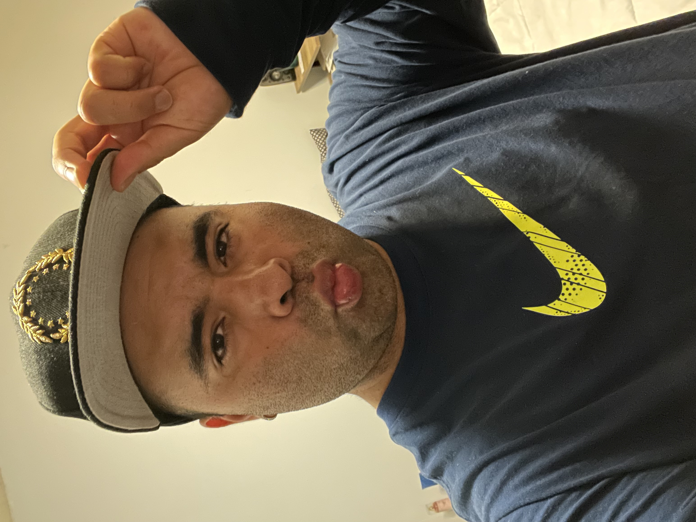

I'm Gerardo Tapia Vera, and I'm born and raised in Salinas, California. I was a student-athlete since I was in middle school, and I was even a student-athlete in college playing Soccer. My favorite subject in school was Math, and I played as an offensive player throughout my career. I loved eating with friends during lunch time, and it was slightly different in college do to everyone having courses throughout the different times in the day. I now invest my time in eating healthy, walking, cooking, cleaning, listening to music, watching movies, and coding. I hope to one day become a full-stack web developer with lots of Data Science experince as well. My goals include to promote healthy eating and exercise along with mental health for a mind, body, and soul transformation.
Lots of people know me as "Gera" and others know me as "Gerry", I'm fine with any of the 3 names that you call me. I'm here at your service, and I'm here to let you know that I do one to one in person training sessions. I'm not certified, but I do have my bachelor's degree. I ask about your medical history, I ask about your exercising history, and I ask about what your goals are along with how committed you are towards accomplishing them. I think it is very simple to get into the physical attraction that you want, but performance is much more difficult. It's all possible though. Contact me at my cell phone number, +18313561442, to get started with me. You can text me or call me, we can even video call.